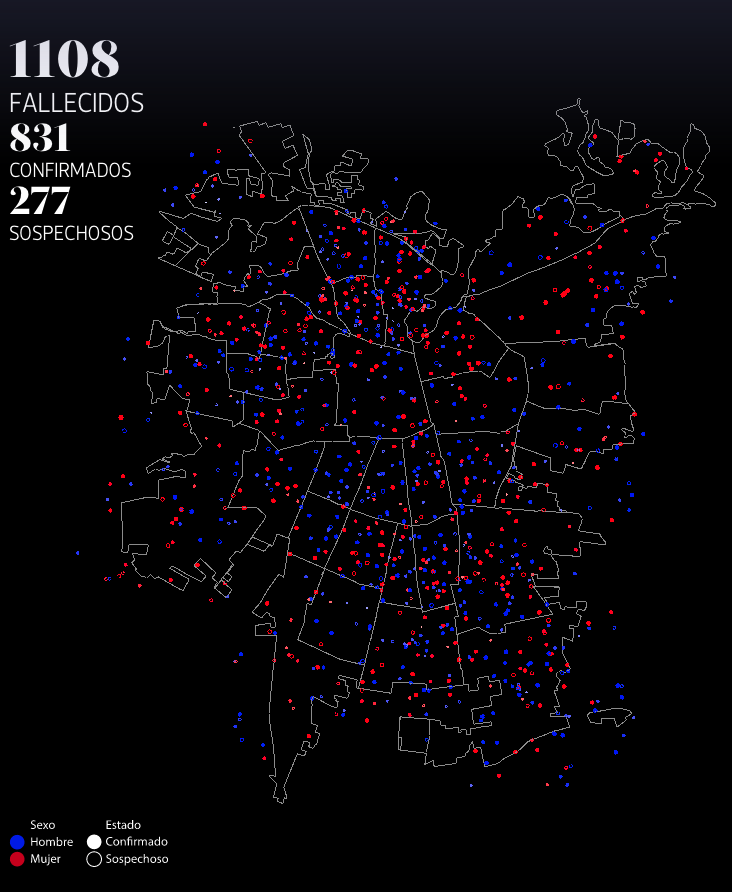

¡Hola 👋! Espera mientras comienza la sesión.
Antes que todo, ¿cómo están?
También, les tengo una pregunta sobre el largo de las sesiones en vivo.
Visualización de Información
IIC2026 2021-2
¡Más equipo docente!
Javiera Saavedra 🐑
- Ayudante de apoyo en corrección
- Estudiante de Major Ingeniería de Software y Título Civil Computación
- Le gusta bailar, nailart, lettering, papas fritas, gatos y Selena Gómez (ewe).
- Prefiere pronombres femeninos (ella/la)
Sebastián Carrasco 🤔
- Ayudante de apoyo en corrección
- Estudiante de Major Ingeniería de Software y Título Civil Computación
- Le gusta el futbol, rugby, hacer ejercicio, star wars y videojuegos
- Prefiere pronombres masculinos (el/lo)
Francisca Ibarra 
- Ayudante de apoyo extra part-time
- Estudiante de Major Computación y Título Civil Computación
- Le gusta dibujar, pintar, tejer, videojuegos, todas las cosas de terror y cualquiera sea mi obsesión de la semana..
- Prefiere pronombres femeninos (ella/la)
Abstracción de datos
Visualización de Información
IIC2026 2021-2
El contenido
El contenido
1. Semantica y tipos de datos
2. Tipos de datasets
3. Tipos de atributos
4. Abstracción y derivaciones de datos
Modelo anidado
Abtraccion de datos
Sub-proceso en proceso de diseño de visualizaciones donde se analiza los datos a representar y se catalogan según su naturaleza.
- Tipos de datos singulares
- Tipos de atributos
- Tipo de dataset completo
Abtraccion de datos
Sub-proceso en proceso de diseño de visualizaciones donde se analiza los datos a representar y se catalogan según su naturaleza.
- Tipos de datos singulares
- Tipos de atributos
- Tipo de dataset completo
Este proceso no se trata de encontrar la verdad absoluta sobre los datos trabajados, si no de entender su naturaleza según el contexto y los intereses que hay de por medio. Por lo tanto, el mismo dato se puede catalogar de formas distintas dependiendo del contexto.
Tipos de datos singulares
Atributo 📏
Ítem 🔘
Enlace 🔃
Posición 📍
Grilla 🥅🗑
Tipos de datasets
Tablas o tabulares 📄
Redes 🕸
Geométricos 🔷🗺
Otros: campos, conjuntos, clusters y listas...
Estáticos ⏸ versus dinámicos ⏩
Abstracción de caso
Visualización de La Tercera: Del 1 al 10 mil: Cómo Santiago se transformó en una de las ciudades con más muertos por covid-19.
Abstracción de caso
Tipos de datos singulares:
- Ítem: Casos de muertes, comunas del radio urbano de la Región Metropolitana.
- Atributos: Sexo de caso, estado de caso (confirmado o sospechoso), latitud de caso, longitud de caso, ...; formas de comunas.
- Posiciones: Latitud de caso, longitud de caso; formas de comunas.
Abstracción de caso
Tipos de datos singulares:
- Ítem: Casos de muertes, comunas del radio urbano de la Región Metropolitana.
- Atributos: Sexo de caso, estado de caso (confirmado o sospechoso), latitud de caso, longitud de caso, ...; formas de comunas.
- Posiciones: Latitud de caso, longitud de caso; formas de comunas.
Tipo(s) de datasets:
- Tabular: Entidades siendo descritas.
- Geométrico: Aparición de posiciones.
Tipos de atributos
Categóricos 🏷
Ordenados 📶
Ordinales 🔢
Cuantitativos ➕➖
Secuencial ⬆️ versus divergente ⬆️⬇️
Ciclicos 🔄 o no
Llave 🔑 versus valor
Abstracción de caso
Visualización de La Tercera: Del 1 al 10 mil: Cómo Santiago se transformó en una de las ciudades con más muertos por covid-19.
Abstracción de caso
Tipos de atributos:
- Estado de un caso: Categórico y atributo de valor.
- Latitud geográfica de un caso: Ordenado cuantitativo, secuencial, no cíclico y atributo de valor.
- Fecha (en semanas) de un caso: Ordenado ordinal, secuencial, no cíclico y atributo de valor.
Principio de expresividad
Una codificación visual utilizada debe expresar toda, y solamente, la información del atributo objetivo.
Canales de identidad ↔️ Atributos categóricos
Canales de magnitud ↔️ Atributos ordenados
Derivación de datos
Proceso de transformación de datos iniciales a otra forma, y realizar su abstracción una vez transformado.
Temperatura 🌡:
25°C, -14°C, 27°C, 11°C, 40°C (Cuantitativo)
Cálido, Frío, Caluroso, Frío, Caluroso (Ordinal)
Seguro, Peligroso, Seguro, Seguro, Peligroso (Categórico)
También puede involucrar múltiples atributos o ítems:
- Multiplicar el total de ventas de un artículo por su precio obteniendo el total de ganancias obtenidas.
- Promediar las notas de un estudiante en un curso para obtener su rendimiento medio.
- ...
¡Visualización del día!
¡Visualización del día!

Propuesto por estudiante: Sapoipilla (?).
{kind=link}
(Creador: Charles Joseph Minard)
Próximos eventos:
Recuerden responder los Cuestionarios asociados a esta semana y la anterior.
Jueves realizaremos actividad sobre Introducción a HTML, CSS y SVG.
Miércoles (mañana) se realizará primera Ayudantía del curso.